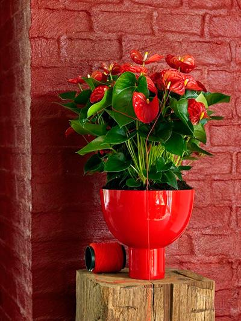

Уход и проблемы выращивания
Уход за антуриумом в домашних условиях заключается в следующем:

- обеспечьте рассеянное освещение без прямых солнечных лучей;
- поддерживайте высокую влажность;
- берегите растение от сквозняков и переохлаждения;
- для хорошего цветения весной и летом держите антуриум при температуре 20–28 °С, а осенью и зимой — от 15 до 17 °С;
- поливайте только мягкой и отстоянной или отфильтрованной водой комнатной температуры;
- не допускайте заболачивания почвы;
- используйте подходящий субстрат, который хорошо пропускает воду и быстро просыхае;
- периодически осматривайте растение, чтобы вовремя выявить проблемы.
Частые ошибки
- многие по неопытности переливают растение, что приводит к гнили корней. Этого делать не стоит;
- в зимний период растение получает недостаточно тепла. От холода на листьях незамедлительно появляются гнилые пятна, внешний вид у цветка становится вялым, слабым.
Температура воздуха не должна опускаться ниже 15 градусов;
- так как антуриум является тропическим растением, то многие цветоводы стараются предоставить ему достаточно света. Зачастую они делают это в слишком избыточных количествах.
От яркого света «Мужское счастье» сразу гибнет.